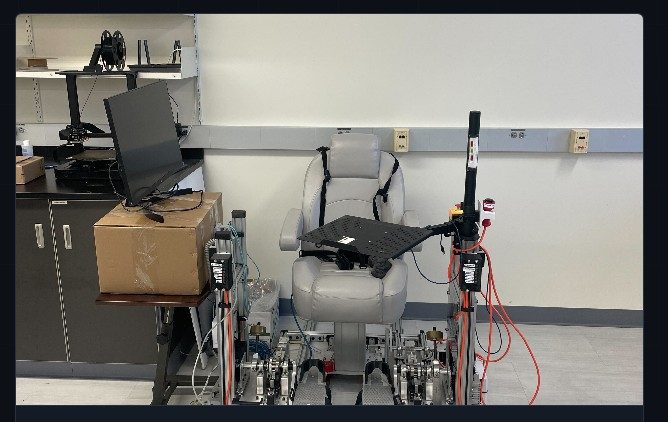
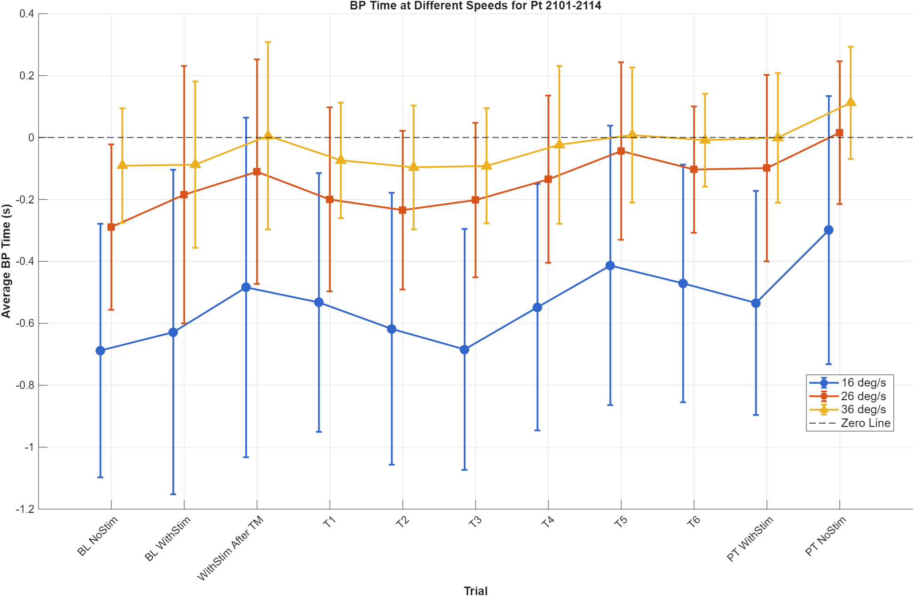
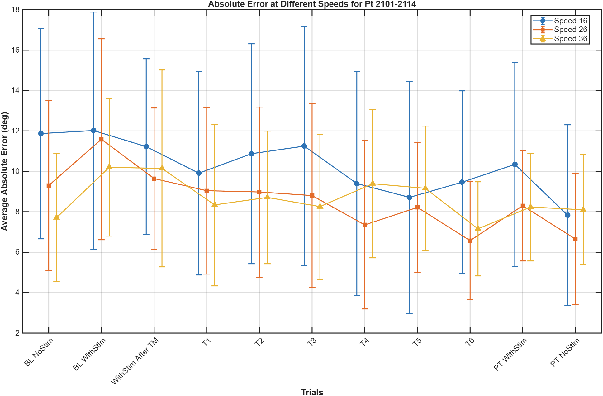

In the Rehabilitation & Augmentation Lab I contribute to this human-subjects study, assessing how spinal cord stimulation affects ankle proprioception during gait rehabilitation clinical trials, work aimed at improving rehabilitation protocols for stroke-patient recovery.

- Conduct human gait rehabilitation trials applying spinal cord stimulation during walking and crisscross tasks to evaluate ankle proprioception and neuromotor response under laboratory protocol.
- Analyze gait biomechanics in Vicon Nexus, processing 3D motion-capture data to extract joint kinematics and step metrics comparing baseline and stimulation sessions.
- Use MATLAB to quantify how movement direction and speed affect proprioception, optimizing rehabilitation protocols for clinical application in stroke-patient recovery.
- Motion capture: Vicon Nexus 3D marker-based capture and joint-kinematics extraction.
- Signal & data analysis: MATLAB processing of gait metrics across experimental conditions.
- Human-subjects protocol: conducting trials under laboratory protocol with live participants.
Within the lab's broader gait-and-proprioception study, my focus is the measurement and analysis side: running trials with live participants and turning each session's raw data into clear, comparable figures.
- Human-subjects trials: conduct spinal-cord-stimulation walking and crisscross tasks, measuring ankle proprioception and neuromotor response across baseline, stimulation, and post-training conditions.
- Motion capture: process 3D marker data in Vicon Nexus to extract joint kinematics and step metrics.
- MATLAB analysis: built the processing pipeline that parses each session, groups trials by treadmill speed, and computes per-condition means with error bars.
I wrote a custom MATLAB script to turn the raw data we collected during testing into these figures by parsing each session, grouping trials by treadmill speed, and computing per-condition means with error bars across the baseline, stimulation, and post-training conditions.


Note: this research is ongoing. The figures above show representative analysis from one participant cohort, generated with my own processing script.